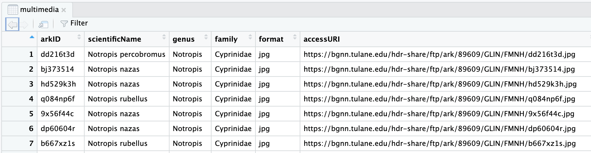

Content from Introduction
Last updated on 2023-03-22 | Edit this page
Overview
Questions
- Why not use a general purpose language like bash or python for writing workflows?
- What problems do workflow languages solve?
- What are the strengths and weaknesses of Snakemake?
- What will be covered in this workshop?
Objectives
- Understand why one would use a workflow language like Snakemake
- Understand the goals of the workshop
Workflow Challenges
Using a general purpose language like bash or python can be challenging:
- Not re-running the whole pipeline every time
- Adapting the pipeline to run in different environments
- Providing dependencies for tools
- Tracking progress of the workflow
Workflow language features
- Portable
- Reproducible
- Scalable
- Reusable
List of workflow languages: https://workflows.community/systems
Strengths of Snakemake
- Readability
- Only creates missing or out of date files
- Flexible control over which files are created
- Is python with some additional rule syntax
- Dynamic branching
- Workflow isn’t fixed at start up.
- Outputs of commands can be used determined what happens next.
Weaknesses of Snakemake
- Requires learning rule based logic instead of procedural logic
- Requires some python code/knowledge for typical workflows
Class Plan
- Create Snakemake Workflow that
- Runs R scripts for filtering and final analysis
- Runs Machine Learning Components
- Efficiently processes many files at the same time
- Reuses an existing Snakemake workflow
Content from Project Setup
Last updated on 2023-03-21 | Edit this page
Overview
Questions
- How do I create a directory with the necessary files for this class?
Objectives
- Connect to OSC
- Create a directory
- Open a Web Terminal in that Directory
- Copy lesson files into place
- Copy cached singularity images into place
Log into OSC
- Visit https://ondemand.osc.edu/.
- Login with your credentials.
- From the top menu select Files -> Home Directory
- Click the New Directory button
- Enter
SnakemakeWorkflowfor the directory name
- Enter
- Click “SnakemakeWorkflow” in the Name column the list of files and folders
- Click “Open in Terminal”
Copy Lesson Files
Some files are provided for this lesson. These files need to be
copied into the “SnakemakeWorkflow” subdirectory within your home
directory. You should be within the SnakemakeWorkflow
directory before running this step.
Verify Directory
Run the following command to ensure you are in the appropriate directory:
BASH
pwdThe output should look similar to the following:
OUTPUT
/users/PAS2136/jbradley/SnakemakeWorkflowCopy Files
Run the following command to copy these files into your current directory (SnakemakeWorkflow):
BASH
cp -r /fs/ess/PAS2136/Workshops/Snakemake/files/* .Next run the ls command to ensure you have all the
needed files:
BASH
lsExpected Output:
OUTPUT
multimedia.csv run-workflow.sh Scripts slurmLesson Files
- multimedia.csv - Main input file of fish images used by the workflow
-
Scripts/
- setup_env.sh - Used to activates snakemake conda environment and other utilities
- FilterImagesHardCoded.R - Rscript that filters a CSV for a target species with hard coded filenames
- FilterImages.R - R script that filters a CSV for a target species
- SummaryReport.R - R script that builds a summary report of the workflow outputs
- Summary.Rmd - R markdown script used by SummaryReport.R to create a report
- run-workflow.sh - sbatch script used to run the workflow using SLURM
- slurm/ - Directory containing a config file used by Snakemake to run SLURM jobs
The main input file (multimedia.csv) was downloaded from
https://bgnn.tulane.edu.
Setup Snakemake Singularity Cache
To avoid waiting for singularity containers to pull we will copy cached containers inline.
BASH
mkdir -p .snakemake/singularity
cp /fs/ess/PAS2136/Workshops/Snakemake/singularity_images/* .snakemake/singularity/.Content from Environment Setup
Last updated on 2023-03-20 | Edit this page
Overview
Questions
- How do I setup an shell environment to use Snakemake?
Objectives
- Start an interactive session on a worker node
- Setup the shell environment
- Verify versions of snakemake and R
Start Interactive Session
Since we will be running some heavy processing starting an interactive job is important. Otherwise this processing would occcur on a login node and cause issues for other cluster users.
Start an interactive session that will remain active for 1 hour of by running:
BASH
sinteractive -t 01:00:00 -A PAS2136Software Environment Setup
Run the following steps from within an OSC ondemand terminal within the “SnakemakeWorkflow” subdirectory.
Activate the Snakemake environment:
BASH
. Scripts/setup_env.shNOTE: The leading dot followed by a space is important. This causes the settings in setup_env.sh to be applied to your current terminal session.
Expected Output:
OUTPUT
Activating R module that can be used with R scripts.
This module will switch Compiler environment to gnu/11.2.0 and load mkl/2021.3.0 for R/4.2.1
Lmod is automatically replacing "intel/19.0.5" with "gnu/11.2.0".
The following have been reloaded with a version change:
1) mvapich2/2.3.3 => mvapich2/2.3.6
Configuring R to use the yaml package.
Configuring singularity to use a cache to speed up pulling containers.Test snakemake with the –version flag
BASH
snakemake --versionExpected Output:
OUTPUT
7.22.0Test R –version flag
BASH
R --versionExpected Output:
OUTPUT
R version 4.2.1 ...Content from Create a Workflow
Last updated on 2023-03-20 | Edit this page
Overview
Questions
- How do you create a Snakemake Workflow?
- How do you run a Snakemake Workflow?
Objectives
- Create a workflow with a single rule
- Run a snakemake workflow
- Understand snakemake output
- Reduce filename duplication using wildcards
- Represent non-file inputs using a param
Snakemake Workflow
A Snakemake workflow is a list of rules.
Commonly used parts of a rule are:
- name - unique name for a rule
- input - input filenames used by a command
- params - non-file input values used by a command
- output - output filenames created by a command
- container - singularity container to run command within
- shell - command to run
Rule pattern:
rule <name>:
input: ...
params: ...
output: ...
container: ...
shell: ...
Create a Snakemake Workflow
For our first step we will reduce the size of the
multimedia.csv input file saving the result as
reduce/multimedia.csv. This CSV file contains a header
line followed by data lines. So to save the first 10 data lines we will
need the first 11 lines in total. This can be accomplished with the
shell head command passing the --n 11
argument. Run the following command in your terminal to see the first 11
lines printed out.
BASH
head -n 11 multimedia.csvTo save this output we will change the command like so:
head -n 11 multimedia.csv > reduce/multimedia.csv
Create a text file named Snakefile with the following
contents:
rule reduce:
input: "multimedia.csv"
output: "reduce/multimedia.csv"
shell: "head -n 11 multimedia.csv > reduce/multimedia.csv"This code creates a Snakemake rule named reduce with a input file multimedia.csv, a output file reduce/multimedia.csv, and the shell command from above. Snakemake will automatically create the reduce directory for us before running the shell command. A common pattern is to output files in a directory named after the rule. This will help you keep track of which rule created a specific file.
Run the Workflow
BASH
snakemakeExpected Error Output:
OUTPUT
Error: you need to specify the maximum number of CPU cores
to be used at the same time. If you want to use N cores,
say --cores N or -cN. For all cores on your system
(be sure that this is appropriate) use --cores all.
For no parallelization use --cores 1 or -c1....The snakemake command has a single required argument
that specifies how manu CPU cores to use when running a workflow. Until
we want to scale up our workflow we are fine using 1 core.
Run snakemake specifying 1 core:
BASH
snakemake -c1Expected Output:
OUTPUT
Building DAG of jobs...
Using shell: /usr/bin/bash
Provided cores: 1 (use --cores to define parallelism)
Rules claiming more threads will be scaled down.
Job stats:
job count min threads max threads
------ ------- ------------- -------------
reduce 1 1 1
total 1 1 1
Select jobs to execute...
[Mon Feb 27 11:28:29 2023]
rule reduce:
input: multimedia.csv
output: reduce/multimedia.csv
jobid: 0
reason: Missing output files: reduce/multimedia.csv
resources: tmpdir=/tmp
[Mon Feb 27 11:28:29 2023]
Finished job 0.
1 of 1 steps (100%) done
Complete log: .snakemake/log/2023-02-27T112816.505955.snakemake.logNotice the reason logging
Missing output files: reduce/multimedia.csv. This tells you
why snakemake is running this rule. In this case it is because the
output file reduce/multimedia.csv is missing.
Try running the workflow again:
BASH
snakemake -c1Expected Output:
Building DAG of jobs...
Nothing to be done (all requested files are present and up to date).
Complete log: .snakemake/log/2023-02-27T113325.906186.snakemake.logReduce duplication using wildcards
Within the shell command the input and
output files can be referenced using wildcards. This
will reduce duplication simplifing filename changes.
Change the shell line in the Snakefile as
follows:
rule reduce:
input: "multimedia.csv"
output: "reduce/multimedia.csv"
shell: "head -n 11 {input} > {output}"Represent non-file inputs using a param
Currently the reduce rule grabs the top 11 rows. Since the meaning of this number may not be obvious and we are likely to change this number in the future a better option is to use this non-file input as a param.
Add a new params setting to the rule and
use the params.rows wildcard in the shell as follows:
rule reduce:
input: "multimedia.csv"
params: rows="11"
output: "reduce/multimedia.csv"
shell: "head -n {params.rows} {input} > {output}"Notice how we assigned a name “rows” to the parameter. Assigning a name like this can also be done for the input and output filenames as well.
Try running the workflow again:
BASH
snakemake -c1Notice the reason has changed
OUTPUT
...
reason: Code has changed since last execution; Params have changed since last execution
...Content from Add an R Script
Last updated on 2023-03-20 | Edit this page
Overview
Questions
- How can I create a rule using an RStudio friendly R script?
- How can I control what files Snakemake creates?
Objectives
- Create a rule that uses an RStudio friendly R script.
- Run snakemake specifying a target output file
- Create an all rule to control the default output files
- Use a YAML config file to avoid filename duplication
RStudio friendly Rules
Next we want to add an R script that will filter an input CSV file for the species of our choosing. We want this R script to be easily runnable within RStudio. To accomplish this we want to avoid passing command line arguments to the R script as this is difficult to accommodate within RStudio.
See the hard coded paths in the R script
BASH
head Scripts/FilterImagesHardCoded.ROUTPUT
input_path <- "reduce/multimedia.csv"
output_path <- "filter/multimedia.csv"
...Run a filtering R script
Add a new rule to the bottom of Snakefile:
rule filter:
input:
script="Scripts/FilterImagesHardCoded.R",
fishes="reduce/multimedia.csv"
output: "filter/multimedia.csv"
shell: "Rscript {input.script}"BASH
snakemake -c1Expected Output:
OUTPUT
Building DAG of jobs...
Nothing to be done (all requested files are present and up to date).
Complete log: .snakemake/log/2023-02-28T164348.500545.snakemake.logSnakemake didn’t create the filter/multimedia.csv.
Snakemake Target Files
When Snakemake starts up it first determines a set of target files to create. By default the target files are determined from the first rule unless filenames are passed along the command line to snakemake. After determining the target files Snakemake looks through the rules and creates job plan (called a DAG) to create the desired target.
Create a desired file
For our workflow the first rule is the reduce rule. To change the target file you can just pass it as an argument to snakemake. This is a nice way to build different files from your workflow when developing it.
Run snakemake specifying filter/multimedia.csv as the
target.
BASH
snakemake -c1 filter/multimedia.csvRun snakemake specifying a non-existant target
BASH
snakemake -c1 winninglotterynumbers.txtOUTPUT
Building DAG of jobs...
MissingRuleException:
No rule to produce winninglotterynumbers.txt (if you use input functions make sure that they don't raise unexpected exceptions).Add a default rule
At the top of Snakefile add a new rule
rule all:
input: "filter/multimedia.csv"Test it out by removing filter/multimedia.csv and running snakemake with no target
rm filter/multimedia.csv
snakemake -c1See how the R script reads from the config file:
BASH
head Scripts/FilterImages.RUse a config file to avoid filename duplication
A better option to allow easy changes to the rows param is to store this value in a config file. Snakemake comes with support for parsing and using a YAML config file.
Create a new file named config.yaml with the following
contents:
reduce_multimedia: reduce/multimedia.csv
filter_multimedia: filter/multimedia.csvThen update your Snakefile to adding the config file
location and using config.yaml to lookup filenames:
configfile: "config.yaml"
rule all:
input: config["filter_multimedia"]
rule reduce:
input: "multimedia.csv"
params: rows="11"
output: config["reduce_multimedia"]
shell: "head -n {params.rows} {input} > {output}"
rule filter:
input:
script="Scripts/FilterImages.R",
fishes=config["reduce_multimedia"]
output: config["filter_multimedia"]
shell: "Rscript {input.script}"Running the workflow again:
BASH
snakemake -c1Content from Process multiple files
Last updated on 2023-03-21 | Edit this page
Overview
Questions
- How can I check a Snakefile without running the whole workflow?
- How can I create a generic rule that can process multiple files?
- How can I use a python function as part of a rule?
- How do I tell snakemake to create a certain file before running a python function?
Objectives
- Determine a filename plan to download images
- Create a pattern rule to download multiple image files
- Use a python function as a params input
- Setup a checkpoint to ensure a file exists before running a python function.
Snakemake Dry Run
When developing a workflow running the entire workflow after every
change can be time intensive. To help with this snakemake has a
--dry-run flag that will validate the
Snakefile and show what it would do. Try this now:
snakemake -c1 --dry-runCreate a filename plan to save images
When downloading images from the internet it is important to avoid filename clashes. To avoid this problem deciding on a plan for naming the files is important.
The input CSV (multimedia.csv) was downloaded from https://bgnn.tulane.edu/userinterface/. This
multimedia.csv file we are using is only meant to be used
for this workshop and should not be used for any particular research
purpose. To create a real world dataset you could use the https://fishair.org/ website
that replaces the website I used to download this file.
When viewed within RStudio the data looks like this: 
The Tulane multimedia.csv
documentation describes the arkID column as:
Multimedia unique identifier number
arkID seems like a good identifier to use in our image filenames.
For the multimedia row with arkID dd216t3d we will save
the downloaded image as:
Images/dd216t3d.jpgUse wget to download an image
BASH
wget -O test.jpg https://bgnn.tulane.edu/hdr-share/ftp/ark/89609/GLIN/FMNH/dd216t3d.jpgCreate a rule that uses a python function
Add a rule to download a single image that uses a python function param:
def get_image_url(wildcards):
base_image_url = "https://bgnn.tulane.edu/hdr-share/ftp/ark/89609/GLIN/FMNH/"
return base_image_url + "dd216t3d.jpg"
rule download_image:
params: url=get_image_url
output: "Images/dd216t3d.jpg"
shell: "wget -O {output} {params.url}"NOTE: Make sure you are using -O and not -o
for the wget argument.
Make the rule generic with a pattern rule
Change this rule to be a pattern rule by adding a wildcard expression in an output filename.
def get_image_url(wildcards):
base_url = "https://bgnn.tulane.edu/hdr-share/ftp/ark/89609/GLIN/FMNH/"
return base_url + wildcards.ark_id + ".jpg"
rule download_image:
params: url=get_image_url
output: "Images/{ark_id}.jpg"
shell: "wget -O {output} {params.url}"Run this rule:
BASH
snakemake -c1 --dry-run Images/hd529k3h.jpgAdd python logic to lookup the URL
Add a pandas import to the top of Snakefile:
import pandas as pdChange the get_image_url function to read the CSV file
and add the file as a rule input:
def get_image_url(wildcards):
filename = "multimedia.csv"
df = pd.read_csv(filename)
row = df[df["arkID"] == wildcards.ark_id]
url = row["accessURI"].item()
return url
rule download_image:
params: url=get_image_url
output: "Images/{ark_id}.jpg"
shell: "wget -O {output} {params.url}"Run snakemake:
BASH
snakemake -c1 --dry-run Images/hd529k3h.jpgUpdating all rule
Update the all rule adding a function that returns the list of all images that should be created.
def get_image_filenames(wildcards):
filename = config["filter_multimedia"]
df = pd.read_csv(filename)
ark_ids = df["arkID"].tolist()
return expand("Images/{ark_id}.jpg", ark_id=ark_ids)
rule all:
input: get_image_filenamesBASH
snakemake -c1Test starting from scratch
BASH
rm -rf reduce filter Images
snakemake -c1OUTPUT
Building DAG of jobs...
FileNotFoundError in file /users/PAS2136/jbradley/SnakemakeWorkflow/Snakefile, line 7:
[Errno 2] No such file or directory: 'filter/multimedia.csv'
...Require a file exists before a python function is used
To fix the FileNotFoundError error we need to inform
Snakemake that it needs to wait for the
filter/multimedia.csv file to be created before Snakemake
runs the function.
We need two changes to fix the error:
- Change the filter rule to be a checkpoint instead of a simple rule. This is done by changing the word “rule” to “checkpoint”.
- Add code to the function requesting the output of the
filtercheckpoint.
Update the get_image_filenames function and
filter rule/checkpoint as follows:
def get_image_filenames(wildcards):
filename = checkpoints.filter.get().output[0]
df = pd.read_csv(filename)
ark_ids = df["arkID"].tolist()
return expand("Images/{ark_id}.jpg", ark_id=ark_ids)
...
checkpoint filter:
input:
script="Scripts/FilterImages.R",
fishes=config["reduce_multimedia"]
output: config["filter_multimedia"]
shell: "Rscript {input.script}"Run downloading multiple files
BASH
snakemake -c1Ensure the downloaded files are jpg
BASH
file Images/*OUTPUT
Images/88624536.jpg: JPEG image data, EXIF standard
Images/9x56f44c.jpg: JPEG image data, EXIF standard
Images/bj373514.jpg: JPEG image data, EXIF standard
Images/dp60604r.jpg: JPEG image data, EXIF standard
Images/hd529k3h.jpg: JPEG image data, EXIF standard
Images/t868dr68.jpg: JPEG image data, EXIF standardContent from Use a container
Last updated on 2023-03-20 | Edit this page
Overview
Questions
- How can I make my workflow more reproducible?
- How do you use a docker image with Snakemake?
- How do I enable containers with snakemake?
Objectives
- Use a container in a rule
- Run snakemake with the –use-singularity argument
Snakemake dependency management
- containers
- exact software versions on later installs
- support for
- docker container images
- singularity container images
- conda environments
- may result in different software versions on later installs
- powerful but might not install in every environment
Singularity Container Image URI
Pulling a container with docker (won’t work on OSC):
BASH
docker pull alpine:3OUTPUT
bash: docker: command not foundPulling a docker container with singularity:
singularity pull docker://alpine:3Singularity supports multiple container types so you must prefix
docker container image URIs with docker://.
Use container when downloading images
Update the download_image rule to use the docker container image URI
quay.io/biocontainers/gnu-wget:1.18--h60da905_7.
rule download_image:
params: url=get_image_url
output:'Images/{ark_id}.jpg'
container: "docker://quay.io/biocontainers/gnu-wget:1.18--h60da905_7"
shell: "wget -O {output} {params.url}"NOTE: You must put the container line before the
shell line.
Delete an image then run snakemake passing the –use-singularity flag
BASH
rm Images/hd529k3h.jpg
snakemake -c1 --use-singularity Images/hd529k3h.jpgOUTPUT
Building DAG of jobs...
Pulling singularity image docker://quay.io/biocontainers/gnu-wget:1.18--h60da905_7.
Using shell: /usr/bin/bash
...
Activating singularity image /users/PAS2136/jbradley/SnakemakeWorkflow/.snakemake/singularity/3a63838ec9e2427957182dedc234c8d7.simg
...Content from Reuse another workflow
Last updated on 2023-03-20 | Edit this page
Overview
Questions
- What is needed to re-use another Snakemake workflow?
Objectives
- Re-use parts of the BGNN_Core_Workflow Snakemake Workflow
Reusing Another Workflow
To re-use a workflow you generally need:
- Where to find workflow? - github “hdr-bgnn/BGNN_Core_Workflow”
- What is the relative path to the Snakefile? “workflow/Snakefile”
- What tag or version to use? “1.0.0”
- What file naming convention is the workflow using?
- What dependencies must be manually installed?
See source code for the workflow https://github.com/hdr-bgnn/BGNN_Core_Workflow/blob/main/workflow/Snakefile#L19
If there is a filename mismatch you can either change your workflow or override settings in the rule.
module bgnn_core:
snakefile:
github("hdr-bgnn/BGNN_Core_Workflow", path="workflow/Snakefile", tag="1.0.0")
use rule generate_metadata from bgnn_coreBASH
snakemake -c1 --use-singularity DrexelMetadata/bj373514.jsonBring in additional rules from BGNN_Core_Workflow
use rule transform_metadata from bgnn_core
use rule crop_image from bgnn_core
use rule segment_image from bgnn_coreBASH
snakemake -c1 --use-singularity Segmented/hd529k3h_segmented.pngContent from Add Summary Analysis
Last updated on 2023-03-20 | Edit this page
Overview
Questions
- How can we specify a rule that has many dynamic input files?
Objectives
- Add a summary rule that requires Segmented images
- Use expand function to simplify creating filenames
Add summary_report to config.yaml:
BASH
head Scripts/SummaryReport.ROUTPUT
config <- yaml::read_yaml(file = "config.yaml")
filtered_images_path <- config$filter_multimedia
output_path <- config$summary_report
filtered_images <- read.csv(file = filtered_images_path)
dir.create(dirname(output_path), showWarnings = FALSE)
rmarkdown::render("Scripts/Summary.Rmd", output_file=basename(output_path), output_dir=dirname(output_path))Edit config.yaml adding summary_report:
summary_report: summary/report.htmlChange the all rule to require
summary/report.html in Snakefile:
rule all:
inputs: config["summary_report"]Add a new function that gathers the inputs for the summary rule and a
summary rule:
def get_seg_filenames(wildcards):
filename = checkpoints.filter.get().output[0]
df = pd.read_csv(filename)
ark_ids = df["arkID"].tolist()
return expand('Segmented/{arkID}_segmented.png', arkID=ark_ids)
rule summary:
input:
script="Scripts/SummaryReport.R",
segmented=get_seg_filenames
output: config["summary_report"]
container: "docker://ghcr.io/rocker-org/tidyverse:4.2.2"
shell: "Rscript {input.script}"Run snakemake to create the summary/report.
BASH
snakemake -c1 --use-singularity --dry-runContent from Run at Scale
Last updated on 2023-03-20 | Edit this page
Overview
Questions
- How can I efficently scale up my workflow in a cluster?
Objectives
- Add a memory requirement to a rule
- View a generic sbatch script to run a workflow at scale
- Run the workflow at scale
Running with Slurm
- Ensure rules request appropriate resources
- threads/cpus
- memory
- requires a gpu
- Configure snakemake to submit slurm jobs
- Run main snakemake job in a background job
See Snakemake threads/resources docs for details on how to request different resources such as threads, memory, and gpus.
Annotating memory requirements
Update the reduce rule to request a specific amount of memory.
rule reduce:
input: "multimedia.csv"
params: rows="11"
output: "reduce/multimedia.csv"
resources:
mem_mb=200
shell: "head -n {params.rows} {input} > {output}"Review sbatch script
The run-workflow.sh script was copied into your
SnakemakeWorkflow during the project setup step. Run the
following command to view it:
cat run-workflow.shOUTPUT
#!/bin/bash
#SBATCH --account=PAS2136
#SBATCH --time=00:30:00
. Scripts/setup_env.sh
JOBS=10
snakemake --jobs $JOBS --use-singularity --profile slurm/Run Background job and monitor progress
Run snakemake in the background scaling up
BASH
sbatch run-workflow.shOUTPUT
Submitted batch job 23985835Monitor job
squeue -u $LOGNAMEtail -f slurm-<sbatch_job_number>.outNotice new job logs
Where did my logs go?
BASH
ls logs/